SeeedStudio BeagleBone Green (BBG) is a low cost, open-source, community supported development platform for developers and hobbyists. It is a joint effort by BeagleBoard.org and Seeed Studio. It is based on the classical open-source hardware design of BeagleBone Black and developed into this differentiated version. The BBG includes two Grove connectors, making it easier to connect to the large family of Grove sensors. The on-board HDMI is removed to make room for these Grove connectors.
Boot Linux in under 10 seconds and get started on development in less than 5 minutes with just a single USB cable.

| Parameter | Value |
|---|---|
| Processor | AM335x 1GHz ARM® Cortex-A8 |
| RAM | 512MB DDR3 |
| on-board Flash Storage | 4GB eMMC |
| CPU Supports | NEON floating-point & 3D graphics accelerator |
| Micro USB | Supports powering & communications |
| USB Host | 1 |
| Grove Connectors | 2 (One I2C and One UART) |
| GPIO | 2 x 46 pin headers |
| Ethernet | 1 |
| Operating Temperature | 0 ~ 75 °C |
BBG has few hardware differences when compared to BBB. Understanding this would enable usage of any Cape designed for BBB.
Seeed.cc's BeagleBoneGreen page documents all of the known hardware issues,
as well as the latest available software, hardware documentation and design materials.
Always read the System Reference Manual!!!
Design materials for creating your own customized version of the hardware,
or for better understanding the design are also linked from the traditional home of "http://beagleboard.org/hardware/design"
BeagleBone Green hardware details
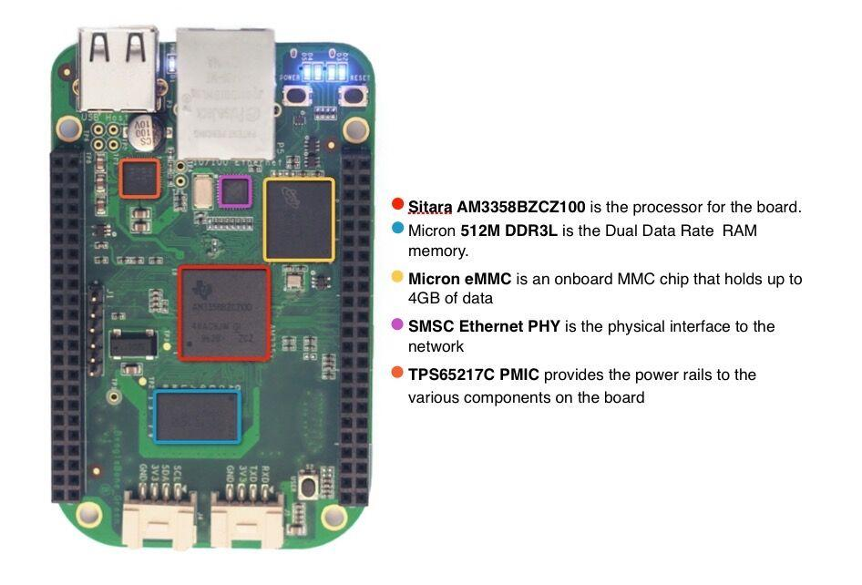
POWER button can be used to enter and exit hibernate modes once that feature is implemented in the software.
Note that DO take care as you handle USB micro type-B socket, or you might break the socket off.
The expansion headers provide extensive I/O capabilities.
Each digital I/O pin has 8 different modes that can be selected, including GPIO.
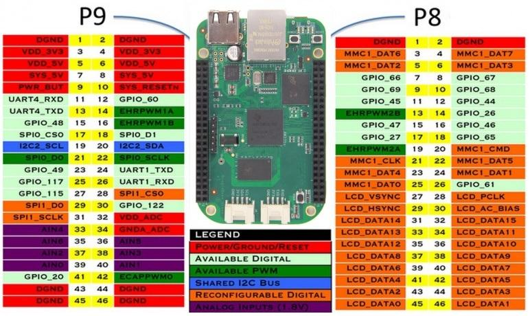
In GPIO mode, each digital I/O can produce interrupts.

Up to 8 digital I/O pins can be configured with pulse-width modulators (PWM) to produce
signals to control motors or create pseudo analog voltage levels, without taking up any extra
CPU cycles.
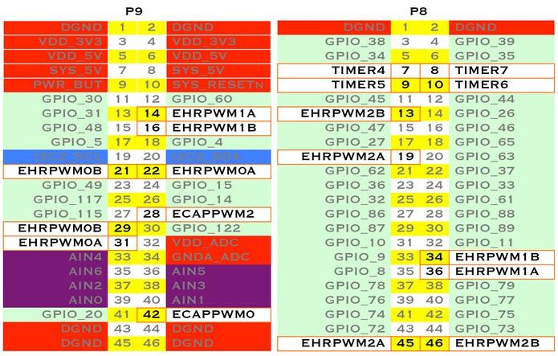
Make sure you don't input more than 1.8V to the analog input pins. This is a single 12-bit
analog-to-digital converter with 8 channels, 7 of which are made available on the headers.
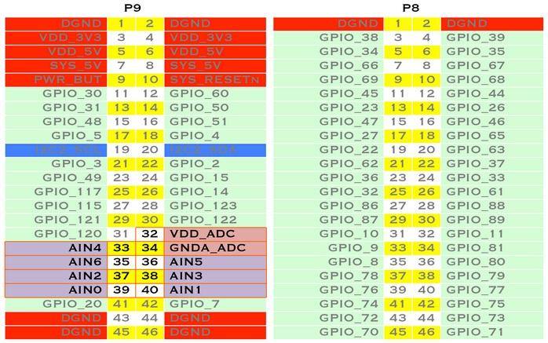
There is a dedicated header for getting to the UART0 pins and connecting a debug cable.
Five additional serial ports are brought to the expansion headers,
but one of them only has a single direction brought to the headers.
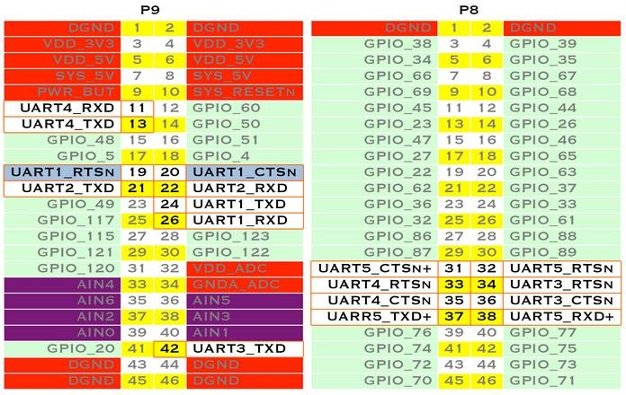
The first I2C bus is utilized for reading EEPROMS on cape add-on boards and can't be used for
other digital I/O operations without interfering with that function, but you can still use it
to add other I2C devices at available addresses.
The second I2C bus is available for you to configure and use.
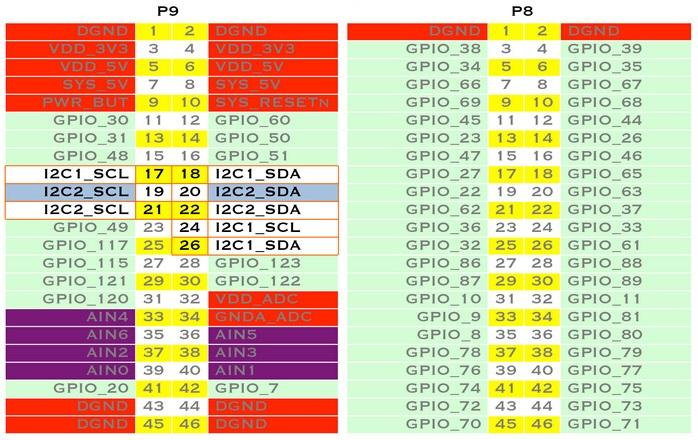
For shifting out data fast, you might consider using one of the SPI ports.
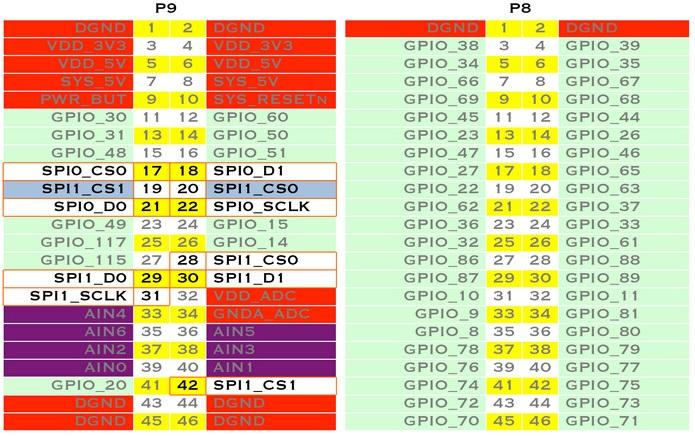
Android? Ubuntu? Gentoo? Whatever your software preference, get started on development with your Beagle and the software resources by click http://beagleboard.org/Support/Software+Support.
Beaglebone Green is a tiny computer with all the capability of today's desktop machines, without the bulk, expense, or noise.
Read the step-by-step getting started tutorial by click http://beagleboard.org/getting-started to begin developing with your BeagleBone in minutes.
To begin editing programs that live on your board, you can use the Cloud9 IDE by click http://192.168.7.2:3000/ .
As a simple exercise to become familiar with Cloud9 IDE, creating a simple application to blink one of the 4 user programmable LEDs on the BeagleBone is a good start.
Step1: Close any open file tabs.
Step2: Click the "+" in the top-right to create a new file.


Step3: Copy and paste the following code into the new tab
import Adafruit_BBIO.GPIO as GPIO import time GPIO.setup("P9_14", GPIO.OUT) while True: GPIO.output("P9_14", GPIO.HIGH) time.sleep(0.5) GPIO.output("P9_14", GPIO.LOW) time.sleep(0.5)
Step4: Save the file by clicking the disk icon and giving the file a name with the .py extension.
Step5: Run the code
Select the arrow to the right of "run" (or "debug") in the toolbar to pull down the list of files to run and select your new file.
Step6: Observe the BeagleBone P9_14 led blinking steadily about once a second.
Step7: Stop the code by clicking "stop" in the toolbar.
There are multiple ways to run initial software on your board, but it is likley that the simplest way to get an update is to create an exact replica of a bootable microSD card and boot off of it.
The BeagleBone Green that can be initialized by a program booted off of a microSD card. If you want to update to the latest software image for your board, this is a way to do that.
Note that only v8.4 or above versions of image file can be used flashed to BeagleBone Green.
Step1: Download the latest microSD card image
Download the image from http://beagleboard.org/latest-images We strongly recommend that you download the latest firmware.
The file you download will have an .img.xz extention. This is a compressed sector-by-sector image of the SD card.
Step2: Install compression utility
Download and install 7-zip by click http://www.7-zip.org/download.html .
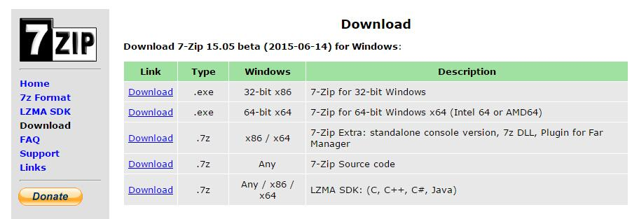
Step3: Decompress the image
Use 7-zip to decompress the SD card .img file
Step4: Install SD card programming utility
Download and install Image Writer for Windows by click http://sourceforge.net/projects/win32diskimager/files/latest/download . Be sure to download the binary distribution.
Step5: Connect SD card to your computer
Use the provided microSD card to SD adapter or a USB adapter to connect the SD card to your computer.
Step6: Write the image to your SD card
Use either the Ubuntu Image Writer or instructions on its page to write the decompressed image to your SD card.
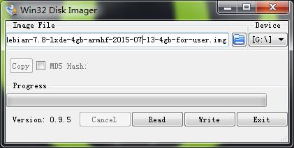
Step7: Eject the SD card
Eject the newly programmed SD card.
Step8: Boot your board off of the SD card
Insert SD card into your (powered-down) board, hold down the USER/BOOT button (if using Black) and apply power, either by the USB cable or 5V adapter.
If using an original white BeagleBone, you are done.
If using BeagleBone Green and the image is meant to program your on-board eMMC, you'll need to wait while the programming occurs.
When the flashing is complete, all 4 USRx LEDs will be lit solid.
Note: This can take up to 45 minutes. Power-down your board, remove the SD card and apply power again to be complete.
If you want to make some awesome projects with Beaglebone Green, here's some projects for reference.
If you need a acrylic case to protect your Beaglebone Green.
There's a tutorial to help you to make one.
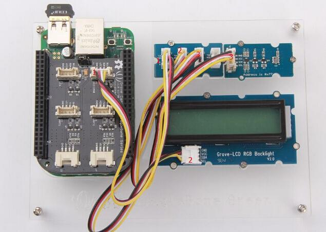
Sometimes we want to know how is our the home environment. And this's a demo by BBG，we can easily monitor the room temperature, pressure, altitude info.
Of course you can also use any other Grove senors to make your own device.
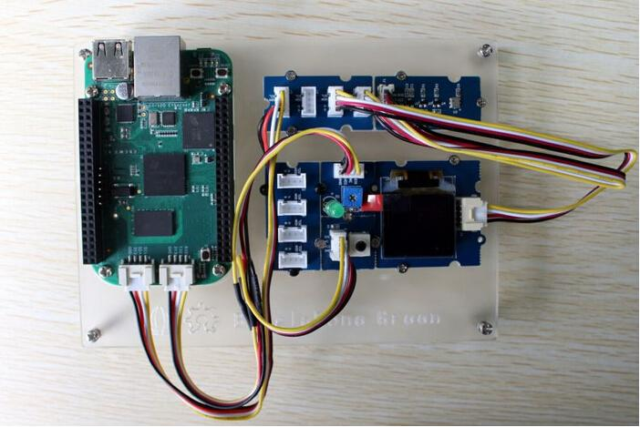
This is an IoT demo which we can upload the temperature info. to the network, and we can view the information in real time.
When the temperature exceeds the threshold, and lasts for 1 minute, a warning Email will be sent to you.